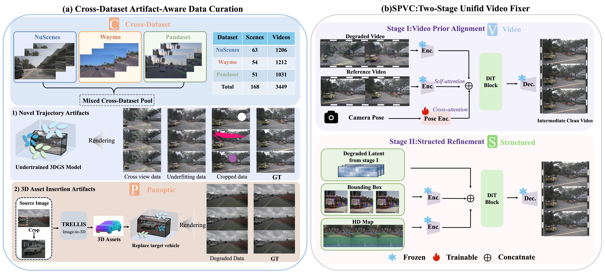

Supplementary Material
Driving scene reconstruction and rendering, especially with 3D Gaussian Splatting, has become an important component of autonomous driving simulation. However, rendered views often degrade under extrapolated ego trajectories and scene edits, producing blurry structures, temporal flicker, and foreground-background misalignment. Existing refinement methods are commonly designed for a specific setting, such as image-level novel-view repair or object-editing correction. In this paper, we introduce SPVC, a structured and panoptic video fixing framework for cross-dataset driving scene rendering. The name summarizes four design principles. (1) Structured fixing denotes the use of explicit spatial conditions, including camera pose, 3D bounding boxes, and HD maps, to guide the repair process and reduce uncontrolled hallucination. (2) Panoptic fixing refers to correcting both background rendering artifacts, such as distorted roads, buildings, and lanes, and foreground vehicle artifacts introduced by scene editing, such as inconsistent object appearance. (3) Video fixing means that the model operates on driving sequences rather than isolated frames, allowing temporal cues to be used during artifact correction. (4) Cross-dataset fixing means that a single shared network is trained and applied across multiple driving datasets, reducing the need for dataset-specific or scene-specific fixers. Concretely, we construct paired degraded-clean training data by simulating under-constrained 3DGS rendering and foreground vehicle insertion artifacts, and train a two-stage controllable video diffusion model that first addresses video-level appearance and then refines scene layout with structured controls. Experiments on Waymo, nuScenes, and PandaSet show that SPVC improves novel-view artifact correction and foreground vehicle insertion fixing over strong baselines, while maintaining better temporal consistency and spatial controllability.

We first construct paired supervision by simulating under-constrained reconstruction across novel-view rendering and 3D asset insertion. The degraded sequence, together with optional boundary frames, is encoded by a frozen video VAE and refined by a controllable video diffusion transformer. SPVC is trained in two stages: boundary-conditioned stabilization followed by progressive boundary-condition dropout, yielding stable and controllable refinement with a foundation-style backbone shared across tasks.
Sample
Baseline
StreetGaussian
Ours
Comparison of SPVC with baseline methods on the Waymo dataset.
Sample
Baseline
OmniRe
Ours
Comparison of SPVC with baseline methods on the nuScenes dataset.
Sample
OmniRe
Ours
Comparison of SPVC with baseline methods on the PandaSet dataset.
Sample
Baseline
Original
Naive Insertion
Ours
Comparison of SPVC with baseline methods for fixing artifacts from 3D asset insertion on the nuScenes dataset.